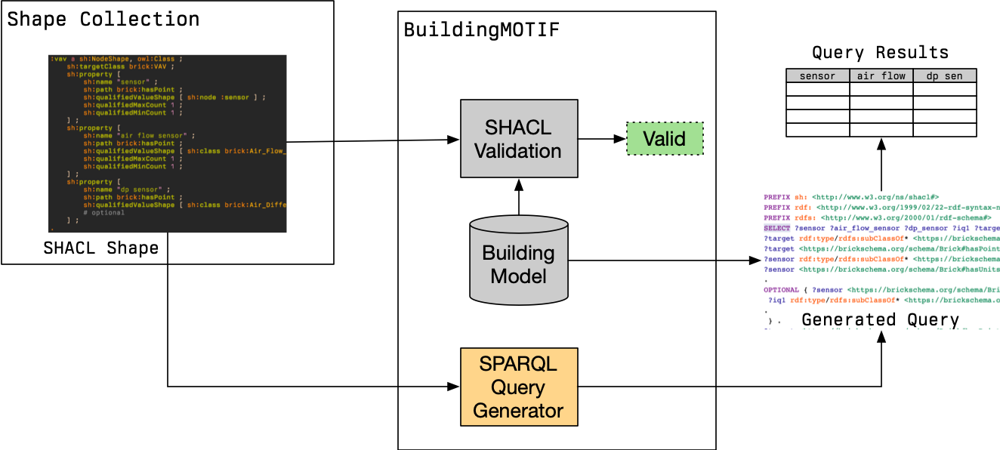

Generating SPARQL Queries#
BuildingMOTIF contains support for generating SPARQL queries from SHACL shapes. Recall that SHACL shapes ensure that a given model contains sufficient metadata to support a given application or suite of applications. Generating a SPARQL query for a shape allows these applications to retrieve the metadata used to validate the graph, which is likely the same metadata the applications need for their own configuration and operation.

The figure above illustrates how the SHACL shape can be used to both validate a model as well as retreive information from it. The variables of the SPARQL query (i.e. the “columns” of the result) are derived from the PropertyShapes included in the SHACL shape.
Supported SHACL Features#
The following SHACL patterns can be translated into SPARQL equivalents
SHACL Pattern |
SPARQL “Equivalent” |
|---|---|
|
|
|
|
|
|
Caution
Not all SHACL features are currently supported! If you need other patterns supported, please file an issue
Generating a Query#
Setup#
Before we can generate a query, we need a ShapeCollection with at least 1 shape in it.
We can create a simple ShapeCollection as follows:
from rdflib import Graph, URIRef
from buildingmotif import BuildingMOTIF
from buildingmotif.dataclasses import ShapeCollection
from buildingmotif.namespaces import BRICK # import this to make writing URIs easier
# in-memory instance
bm = BuildingMOTIF("sqlite://")
sc = ShapeCollection.create()
sc.graph.parse(data="""
@prefix sh: <http://www.w3.org/ns/shacl#> .
@prefix brick: <https://brickschema.org/schema/Brick#> .
@prefix rdf: <http://www.w3.org/1999/02/22-rdf-syntax-ns#> .
@prefix rdfs: <http://www.w3.org/2000/01/rdf-schema#> .
@prefix owl: <http://www.w3.org/2002/07/owl#> .
@prefix bmotif: <https://nrel.gov/BuildingMOTIF#> .
@prefix : <urn:simpleapp/> .
: a owl:Ontology .
:app1 a sh:NodeShape ;
sh:targetClass brick:Fan_Coil_Unit ;
sh:property [
sh:path brick:hasPoint ;
sh:qualifiedMinCount 1 ;
sh:qualifiedValueShape [ sh:class brick:Occupied_Cooling_Temperature_Setpoint ] ;
sh:name "coolsp" ;
] ;
sh:property [
sh:path brick:hasPoint ;
sh:qualifiedMinCount 1 ;
sh:qualifiedValueShape [ sh:class brick:Occupied_Heating_Temperature_Setpoint ] ;
sh:name "heatsp" ;
] ;
sh:property [
sh:path ( brick:feeds brick:hasPart brick:hasPoint ) ;
sh:qualifiedMinCount 1 ;
sh:qualifiedValueShape [ sh:class brick:Air_Temperature_Sensor ] ;
sh:name "roomTemp" ;
] ;
.
""")
<Graph identifier=f2d11fe7-9aeb-4206-9f5f-61240537781d (<class 'rdflib.graph.Graph'>)>
Finding Shapes#
We can ask the ShapeCollection for what shapes it contains which target certain classes.
for shape_name in sc.get_shapes_about_class(BRICK.Fan_Coil_Unit):
print(shape_name)
urn:simpleapp/app1
We can also query the ShapeCollection’s graph directly:
shape_query = """
PREFIX sh: <http://www.w3.org/ns/shacl#>
SELECT ?shape WHERE { ?shape a sh:NodeShape }
"""
for (name,) in sc.graph.query(shape_query):
print(f"{name} is a NodeShape")
urn:simpleapp/app1 is a NodeShape
Generating Queries from Shapes#
To generate a query, we call the shape_to_query function with the URI of a shape as the argument.
# refer to the shape by its URI
app1_shape = URIRef("urn:simpleapp/app1")
print(sc.shape_to_query(app1_shape))
PREFIX sh: <http://www.w3.org/ns/shacl#>
PREFIX rdf: <http://www.w3.org/1999/02/22-rdf-syntax-ns#>
PREFIX rdfs: <http://www.w3.org/2000/01/rdf-schema#>
SELECT ?roomTemp ?heatsp ?target ?coolsp WHERE {
?target rdf:type/rdfs:subClassOf* <https://brickschema.org/schema/Brick#Fan_Coil_Unit> .
?target <https://brickschema.org/schema/Brick#hasPoint> ?coolsp .
?coolsp rdf:type/rdfs:subClassOf* <https://brickschema.org/schema/Brick#Occupied_Cooling_Temperature_Setpoint> .
?target <https://brickschema.org/schema/Brick#hasPoint> ?heatsp .
?heatsp rdf:type/rdfs:subClassOf* <https://brickschema.org/schema/Brick#Occupied_Heating_Temperature_Setpoint> .
?target <https://brickschema.org/schema/Brick#feeds>/<https://brickschema.org/schema/Brick#hasPart>/<https://brickschema.org/schema/Brick#hasPoint> ?roomTemp .
?roomTemp rdf:type/rdfs:subClassOf* <https://brickschema.org/schema/Brick#Air_Temperature_Sensor> .
}
The resulting string can be used to query a Model instance, e.g. using code like
app_query = sc.shape_to_query(app1_shape)
for row in model.graph.query(app_query):
print(row)
Below, we load a model from a file and use the generated query from above to
create a pandas DataFrame object with the query results.
from buildingmotif.dataclasses import Model
from rdflib import Namespace
import pandas as pd
# generate and save the query string to a variable
app_query = sc.shape_to_query(app1_shape)
# Create the 'building1' model and load the contents from a file
BLDG = Namespace("urn:building1")
model = Model.create(BLDG)
model.graph.parse("query_generation_example.ttl")
res = model.graph.query(app_query)
df = pd.DataFrame(res.bindings)
print(df.iloc[0])
---------------------------------------------------------------------------
ModuleNotFoundError Traceback (most recent call last)
Cell In[5], line 3
1 from buildingmotif.dataclasses import Model
2 from rdflib import Namespace
----> 3 import pandas as pd
5 # generate and save the query string to a variable
6 app_query = sc.shape_to_query(app1_shape)
ModuleNotFoundError: No module named 'pandas'